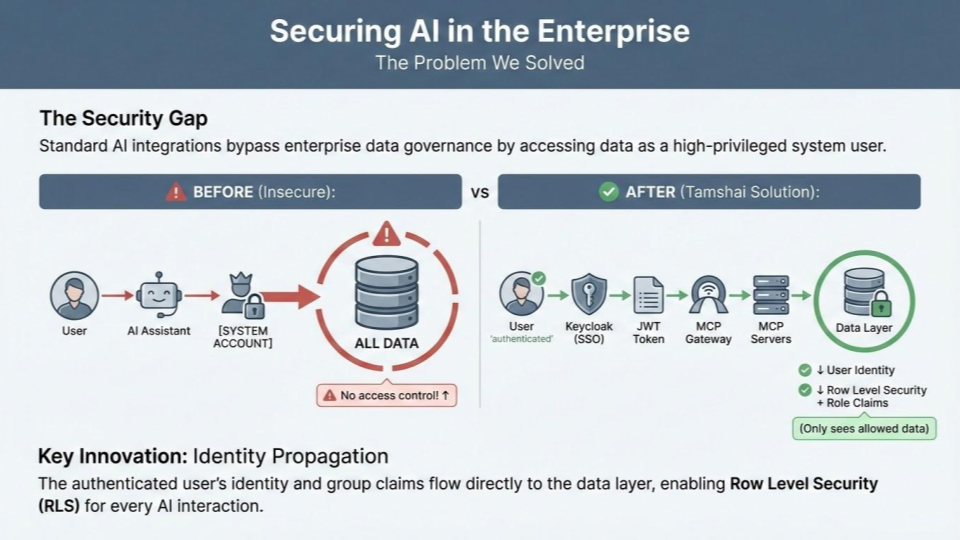

In late 2025, the Tamshai Enterprise AI project was moving fast, but our safety net was fraying. We were sitting at a precarious 31.52% test coverage. For an enterprise platform handling sensitive HR, Finance, and Sales data via AI, "moving fast" was starting to feel like "moving recklessly." We knew that to build a secure, multi-platform solution, we had to stop treating testing as an afterthought and start treating it as our primary development engine.
The Shift: Embracing the RED-GREEN-REFACTOR
We pivoted to a strict Test-Driven Development (TDD) methodology for all our service applications. This wasn't just a policy change; it was a cultural shift in how we write code. By following the classic RED-GREEN-REFACTOR cycle, we ensured that every new feature was defined by its tests before a single line of production logic was written.
"Design quality isn't accidental. By writing tests first, we force ourselves to think about interfaces and edge cases before we get lost in the implementation."
The Deep Dive: Refactoring for Testability
Our biggest hurdle was the MCP Gateway, which originally housed a monolithic index.ts that was nearly impossible to unit test effectively. To hit our targets, we didn't just add tests — we re-architected.
1. Module Extraction
Following our Phase 5-8 refactoring plan, we extracted business logic from the monolith into isolated, testable modules. This allowed us to achieve:
- AI/Claude Client: 100% coverage.
- Auth/JWT Validation: 94% coverage.
- Types/Discriminated Unions: 100% coverage.
2. CI/CD Pipeline Overhaul
We overhauled our GitHub Actions to support a 14-job testing matrix. This pipeline acts as a "Gatekeeper," ensuring that no code reaches main without passing a gauntlet of checks.
- Matrix Testing: We now test across both Node.js 20 and 22 simultaneously.
- Security Scanning: A 5-layer defense-in-depth approach including Gitleaks, CodeQL, and Trivy.
- Blocking Gates: Our CI now enforces a 90% Diff Coverage rule — if your new code isn't tested, your PR is blocked.
Visualizing the Security Gap
One of the core reasons for this rigorous testing was to solve the "Security Gap" inherent in standard AI integrations.
As shown in our architecture, we moved away from insecure system-account access to Identity Propagation. The authenticated user's identity and group claims now flow directly to the data layer, enabling Row Level Security (RLS) for every interaction. This complexity is exactly why our test coverage needed to be absolute.
The Results: By the Numbers
As of January 22, 2026, the transformation is clear. We have transitioned from a "bare minimum" testing state to what industry standards call the "Commendable" tier.
| Metric | Original Baseline | Current Status (Jan 2026) |
|---|---|---|
| Overall Statement Coverage | 31.52% | 86.7% |
| Total Tests | ~200 | 1,240+ |
| MCP Journey Coverage | N/A (New) | 97.21% |
| Branch Coverage | <30% | 79.2% |
Lessons Learned: Why AI Coders Need Senior Oversight
An interesting discovery during this journey was the behavior of our AI assistants (Claude, Gemini, and ChatGPT). While the project was completely coded by these assistants, it required 10+ hours a day of senior human oversight.
We identified several "AI Junior Coder" pitfalls:
- Short-term Thinking: A preference for the easiest path rather than the most scalable solution.
- Hacks Over Fixes: A tendency to implement workarounds instead of solving root causes.
- Context Degradation: Gradual reduction in decision quality as context windows reached their limits.
Conclusion: The "So What?"
Reaching 86.7% overall coverage isn't just about vanity metrics. It means that when we refactor our AI query engine or update our RBAC logic, we do so with the confidence of over 1,200 automated sentinels guarding the gates. We've proven that even a legacy monolith can be turned into a high-coverage, modern service through disciplined TDD and modular refactoring.
What's your team's "sweet spot" for test coverage? Let's discuss the balance between 100% perfection and practical shipping in the comments.